Режет документ на требования
Таблица R-NN с якорями: страница, раздел, строка, ячейка таблицы. Текст требования цитирует код, а не модель.
Агент читает документ требований в PDF, DOCX или Markdown, режет его на отдельные требования, проверяет каждое и весь набор и пишет отчёт на русском: что нарушено, где именно в документе, что исправить первым и какие вопросы задать автору.
uv run validator data/input/requirements.pdf out/report.pdfМесяц определяется по дате совершения покупки в Алматы.раздел «Требования к изменениям › Функциональные требования», стр. 2 · R-06.1, R-14 ✓ цитата сверена кодом с документом
Q-01, вопрос автору: покупка на 4 000 ₸ совершена 31 января в 23:58 и проведена 1 февраля в 00:03 по Алматы. В расходы какого месяца она входит?
Ревью ТЗ в банке медленное и зависит от проверяющего. Пропущенная неясность всплывает на тестировании, когда код уже написан.
дефектов находит ревью по медиане, разброс от 31 до 93 %. Остальное уходит дальше по конвейеру.
на исправление одного дефекта требований: найден на этапе требований или только на испытаниях.
ревью документа кейса (8 страниц) втроём: аналитик, QA, разработчик. Около 12 420 ₸ по медианной ставке.
Источники: Boehm и Basili, 2001; Langenfeld и др., 2016, табл. 3; Doolan, 1992. Ставка 2 521 ₸/ч по hh.kz. Подробно в docs/value.md и исследовании 22. Время ручного ревью это оценка по опубликованным скоростям, на людях мы его не замеряли.
Агент выдаёт не мнения, а находки, которые можно проверить: цитата, пункт стандарта, пример-свидетель и следующий шаг.
Таблица R-NN с якорями: страница, раздел, строка, ячейка таблицы. Текст требования цитирует код, а не модель.
Каждое требование и весь набор по 29148 (п. 5.2.5, 5.2.6) и IEEE 830 (п. 4.3), плюс доменные чек-листы: деньги, даты, статусы, уведомления, API.
Строит пример-свидетель, где два места документа дают разный результат, и пишет попытку тест-кейса с пропуском [?] там, где в документе нет значения.
Вопросы с конкретным сценарием, вариантами ответа и адресатом. Автор отвечает в questions.yaml, агент проверяет документ снова.
Светофор на первой странице и список «что исправить первым». Важность и счётчики считает код по таблице, а не модель.
Пароль, скан, пустой или обрезанный файл: вместо падения отчёт-диагностика с кодом проблемы и понятным следующим шагом.
Модель делает то, что умеет только она: решает, где в документе требования, ищет дефекты, строит свидетеля и пишет вопросы. Всё, от чего зависит доверие к отчёту, делает код без модели.
Подробно: docs/architecture.md, решения с альтернативами: docs/adr/.

Сравнили агента с одним запросом в чат на документе кейса по одному протоколу: по три прогона на финальном коде, эталон из 45 дефектов.
цитат в отчёте есть в документе дословно, их сверяет код. У одного промпта 84,7 %.
полнота по эталону, среднее трёх прогонов. Строго 80,7 %.
критичных находок отчёта оба разметчика признали настоящими. Критичные дефекты эталона найдены строго.
и $2,75 по тарифу API на отчёт на сдачу. Через подписку Claude деньги не списываются.
| Метрика | Один промпт | Агент | Кто лучше |
|---|---|---|---|
| Цитаты есть в документе | 84,7 % | 100 % | агент |
| Совпадение мест документа между прогонами (Жаккар) | 0,527 | 0,891 | агент |
| Вопросы автору ТЗ на прогон | нет | 15 | агент |
| Полнота по эталону / строго | 93,3 % / 84,4 % | 94,1 % / 80,7 % | наравне |
| Precision строгая / мягкая | 44,2 % / 97,7 % | 41,7 % / 85,4 % | один промпт |
| Время и цена прогона | ≈ 2 мин, $0,31 | ≈ 14 мин, $3,05 | один промпт |
Средние трёх прогонов стабильности по requirements.md. Отчёт на сдачу это отдельный прогон по PDF: 12,5 минуты, $2,75. Эталон, судья и разметчики precision это модели Claude, не люди, поэтому recall и precision это оценка. Таблица и оговорки: evals/results/summary.md.
Точность находок ниже, чем у одного промпта. Спорные и ложные находки сидят среди незначительных. Выигрыш агента в доверии к цитатам, а не в числе найденного.
На чужих документах шума больше. На длинном формальном ТЗ на 18 страниц хотя бы один разметчик назвал ложными 38 из 127 находок. Ложных критичных не было.
Длинные документы дороги. 18 страниц стоили $5,49 и 15 минут. Расходы ограничивает флаг --max-budget-usd.
Путь через API прогнан вживую один раз: 27.11, $2,40, тот же итог, что в отчёте на сдачу. Разброс и цену на нём отдельно не мерили.
Полный список: README, «Ограничения».
Запись терминала: одна команда на PDF, первая страница отчёта, битый файл, вопросы автору и повторная проверка с ответами. Модель в записи не вызывается, ответы взяты из записи живого прогона.
Нужны git и uv: uv сам скачает Python 3.11+ и все библиотеки. Команды одинаковы в bash и PowerShell.
После установки перезапустите терминал.
# macOS и Linux curl -LsSf https://astral.sh/uv/install.sh | sh # Windows (PowerShell) powershell -ExecutionPolicy ByPass -c "irm https://astral.sh/uv/install.ps1 | iex"
git clone https://github.com/noncalan/QAIRU-larpers.git cd QAIRU-larpers uv sync
Выберите, как агент будет вызывать модель Claude.
Бесплатно, секунды. Агент проходит весь конвейер заново, а ответы модели берёт из записи живого прогона. Так пересобирается наш отчёт. Для своего документа нужен путь Б или В.
uv run validator data/input/requirements.pdf out/report.pdf --backend replay --replay tests/fixtures/e2e/pdf/run
Битые файлы проверяются вообще без модели:
uv run validator tests/fixtures/broken/password.pdf out/broken/report.md
Основной путь, деньги не списываются, тратится лимит подписки. Установите Claude Code и войдите в Pro или Max: запустите claude, выполните /login и выйдите. Агент сам найдёт claude и вызовет модель из пустой временной папки, без инструментов и без файлов репозитория.
claude auth status uv run validator data/input/requirements.pdf out/report.pdf
$2,40–3,15 за прогон документа кейса. Ключ читается только из окружения или .env (он в .gitignore) и никуда не печатается. Флаг --max-budget-usd 5 остановит новые вызовы, когда потрачено $5.
cp .env.example .env # Windows: copy .env.example .env, затем впишите ANTHROPIC_API_KEY=
uv run validator data/input/requirements.pdf out/report.pdf --backend api--answers out/questions.yamlПроверить снова с ответами автора. В отчёте появится раздел «Уточнения» с таблицей «до и после».
--ask3–5 главных вопросов прямо в терминале, затем сразу проверка.
--passes 3 · --profile submitНесколько проходов поиска или проход на высоком effort. Дороже.
--max-budget-usd 5Остановить новые вызовы модели, когда потрачено $5.
--cache refresh · --cache offПовторный прогон того же документа берёт ответы из кеша и не тратит лимит.
--backend replay --replay ПАПКАПересобрать отчёт из записи вызовов модели, без сети.
out/ ├── report.pdf # отчёт, если второй аргумент .pdf ├── report.md # тот же отчёт в Markdown, всегда ├── report.json # тот же отчёт для машин ├── questions.yaml # вопросы автору, поле answer ├── report.log # шаги прогона, время, ошибки └── run/ ├── calls.jsonl # каждый вызов: модель, токены, цена └── responses/ # ответы целиком, для replay
BCC-HUB x MNU AI Agent Challenge 2026, кейс AI Requirements Validator.